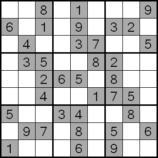

В судоку играют на квадратном поле 9 на 9 клеток. Само поле поделено на районы (квадраты 3 на 3)
В начале игры известны некоторое число цифр в определенных клетках

Цель судоку заполнить все пустые клетки с помощью цифр 1-9 (по одной цифре на клетку), по следующим правилам:
1. Цифра может появиться только один раз в каждой строчке
В начале игры известны некоторое число цифр в определенных клетках
Нельзя
Можно
2. Цифра может появиться только один раз в каждом столбике
Можно
Нельзя
3. Цифра может появиться только один раз в каждом районе
Можно